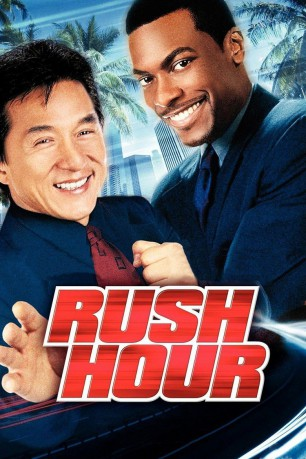

#1994 Rush Hour
 
 IMDB-Wertung: 7.0 / 10
IMDB-Wertung: 7.0 / 10  Metascore: 60
Metascore: 60 
Um dem FBI zu helfen, seine entführte Tochter wieder zu bekommen, wird Inspektor Lee von seinem Freund Konsul Han aus Hong Kong nach Los Angeles gerufen. Das FBI hat allerdings kein Interesse an ausländischer Hilfe, deshalb soll James Carter, Polizist des LAPD, der kurz vor der Suspendierung steht, ihnen den Asiaten vom Hals halten.
Jahr: 1998
Dauer: 98 Minuten
FSK: 12
Land: USA Studio: New Line CinemaTonspuren:
Untertitel:
Auflösung: 1080p (1920x784) Größe: 5509 MB
Genre: Action, Thriller, Komödie, Krimi
Regisseur:  Brett Ratner
Brett Ratner
Drehbuch: Ross LaManna, Jim Kouf, Ross LaManna
Soundtrack: Lalo Schifrin
Darsteller:
Datei: X:\3-Trilogie(N-Z)\Rush Hour\Rush Hour (1998, FSK12, 1920x784).mkv seit 19.09.2015
Festplatte: HD Collection-3(N-Z)-6(A-Z)
 Alle Filme aus Gruppe '3-Trilogie(N-Z)\Rush Hour'
Alle Filme aus Gruppe '3-Trilogie(N-Z)\Rush Hour'